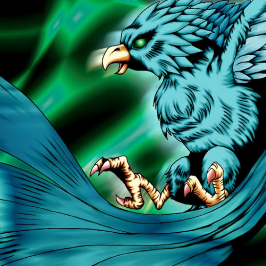

Faith Bird

STATS
ATK: 1500
DEF: 1100DECK COST
Deck Cost per Card: 26Fusion List (10 Possible Fusions)
- Faith Bird + Blast Juggler = Crimson Sunbird
- Faith Bird + Boulder Tortoise = Turtle Bird
- Faith Bird + Candle of Fate = Crimson Sunbird
- Faith Bird + Darkfire Dragon = Crimson Sunbird
- Faith Bird + Fire Eye = Crimson Sunbird
- Faith Bird + Firegrass = Crimson Sunbird
- Faith Bird + Flame Swordsman = Crimson Sunbird
- Faith Bird + Flame Snake = Crimson Sunbird
- Faith Bird + Hinotama Soul = Crimson Sunbird
- Faith Bird + Mavelus = Crimson Sunbird